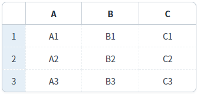
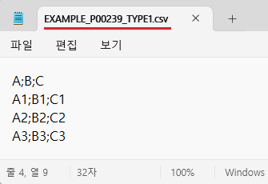

GridView의 'saveCSV' 메소드를 사용하여, CSV 형식으로 다운로드한 예제입니다. 데이터 구분자, 제외할 컬럼, 헤더 출력 여부 등을 설정할 수 있습니다.
CSV 형식으로 다운로드
1
STEP 1: 초기 상태 확인하기
GridView의 데이터를 확인합니다.
Image 1.브라우저(Chrome) 실행 예시

2
STEP 2: 'CSV 형식으로 다운로드' 버튼을 클릭합니다.
'EXAMPLE_P00239_TYPE1.csv' 파일이 다운로드 됩니다.
3
STEP 3: 실행된 결과를 확인합니다.
다운로드 된 'EXAMPLE_P00239_TYPE1.csv' 파일을 메모장으로 실행합니다.
컬럼간 구분자는 ';'로 설정되고 데이터는 화면에 출력된 값으로 다운로드 됩니다.
Image 2.다운로드된 CSV 파일 예시 - Windows 11 메모장

1
'saveCSV' 메소드를 사용하여 스크립트를 작성합니다.
Example 1.Script
//예제 파일의 스크립트 "scwin.btn_ex1_onclick"를 참고하세요. var jsnOptions = { fileName: "EXAMPLE_P00239_TYPE1.csv" //파일명 }; //GridView 'grd_exam1'의 데이터를 CSV 형식으로 다운로드합니다. grd_exam1.saveCSV(jsnOptions);
saveCSV( options )